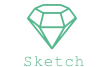
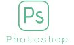
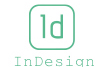
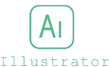
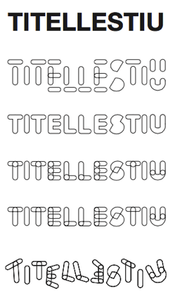
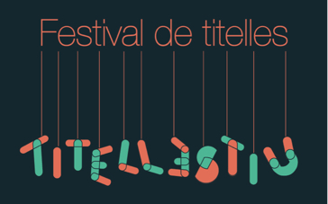
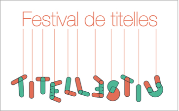
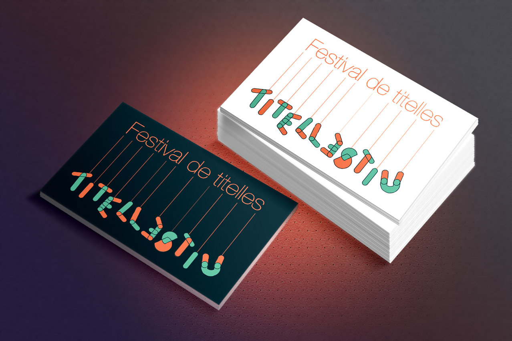
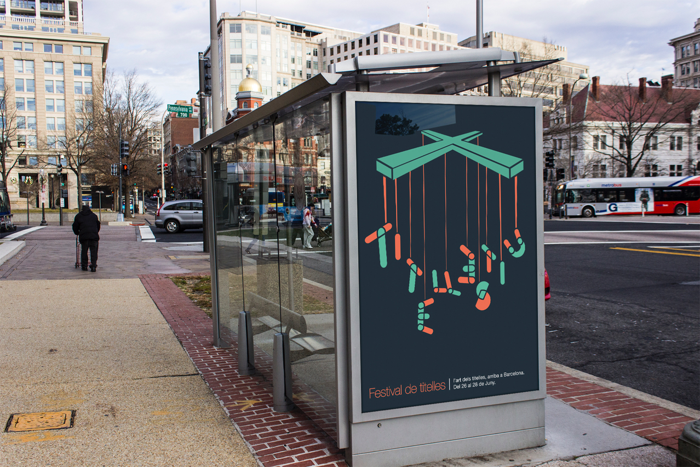
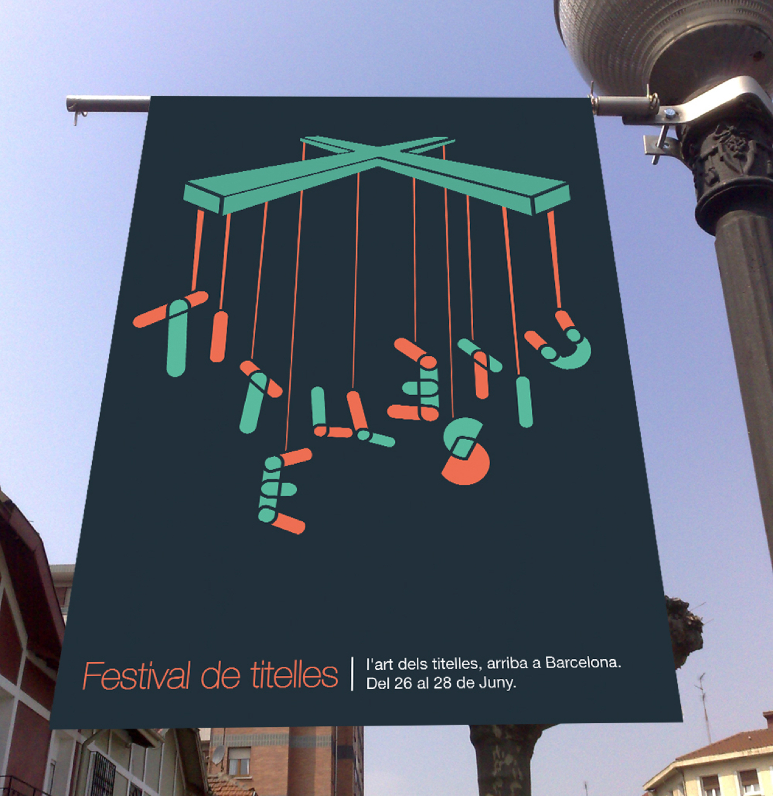

TITELLESTIU
Creación de una identidad gráfica mediante la gestión de los activos vinculados, ya sea de manera directa o indirecta,a un nombre comercial y su correspondiente logotipo o símbolo.
Diseño de una imagen de marca que identifique una campaña promocional para un festival de artes escénicas, en este caso de títeres. Este festival quiere difundir y promover las obras de pequeño formato, que son poco conocidas. Trabajo individual, realizado para un proyecto de clase.
Programas utilizados para el proyecto
- 
- 
- 
- 
Tratamiento Tipográfico
Utilización de la tipografía “Helvetica Neue” para todo mi proyecto, ya que considero que es una tipografía neutral que tiene gran claridad. Creé una “nueva tipografía” partiendo de esta, formada por formas elípticas verticales y horizontales, superponiéndose entre sí y creando así las intersecciones en cada letra.
Tratamiento del color
- 
- 
Los colores utilizados son vivos y llamativos, expresándonos diversión, alegría y todo lo que puede transmitir un festival como este. Dependiendo de la aplicación, seutilizarían unos colores u otros.
Aplicaciones
- 
- 
- 